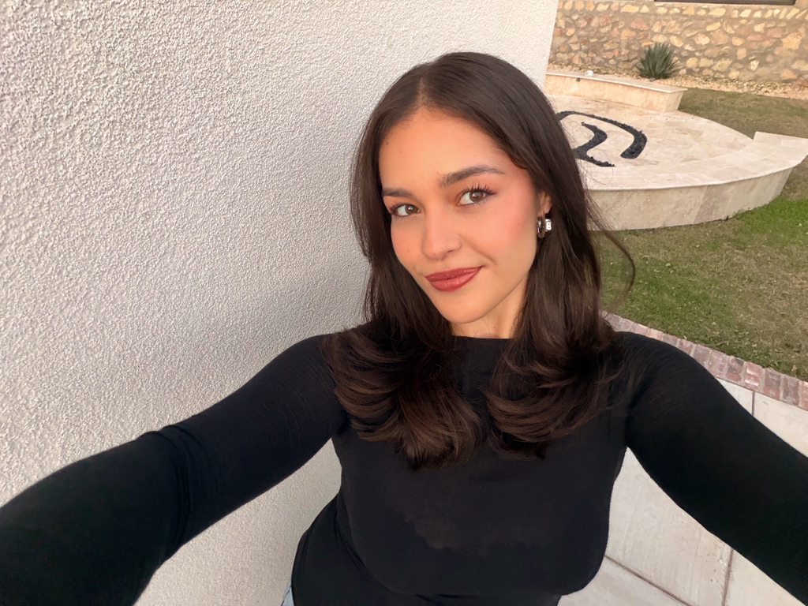

Hi! I'm Monica. I'm a product designer, researcher and builder.
UX/UI and product designer based in Texas, with a background in public health. I design research-driven experiences for health, wellness and mission-driven teams. When I'm not in Figma, I'm behind a camera, finding new music, or reading about wellness. I'm looking for my next role!

I started by fixing a real problem.
I came to design through public health and nonprofit work. As a Development Associate, I watched disbursement requests for more than 200 funds get lost in email threads and PDFs, so I researched what clients and staff needed and helped shape the portal that replaced the whole process.
Since then I've completed a postgraduate UI/UX program focused on data-driven business applications, plus extra training in UX for healthcare. My strongest tools are research and data: talking to people, testing with them and letting what I learn shape the design.
- User research
- Usability testing
- Data analysis
- Heuristic evaluation
- Information architecture
- User flows
- Wireframing
- Prototyping
- UI design
- Figma
- Front-end prototyping